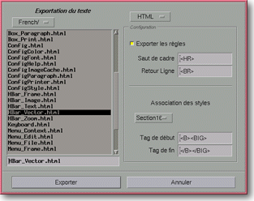

<!-- Documentation Xclamation (c)1994-2000 AXENE contact axene@axene.org>
<html>

<head>
<title>Exportation du texte</title>
</head>

<body BGCOLOR="#FFFFFF" BACKGROUND="Images/back.gif" TEXT="#000000">

<p ALIGN="right">  </p>

<p><br>
<br>
Le sélecteur de fichier &quot;Exportation de texte&quot; permet de choisir le nom du
fichier dans lequel le texte contenu dans l'éditeur de texte est exporté. Ce sélecteur
ne peut être ouvert que depuis le menu <i>&quot;<a HREF="Box_Editor.html#options_menu">Options</a>
/ <a HREF="Box_Editor.html#export_text_menu_entry">Exporter texte...</a>&quot;</i> de l'<a HREF="Box_Editor.html">éditeur de texte</a> d'Xclamation. <br>
<br>
</p>

<hr>

<p align="center"><br>
 <br>
<small><i>Photo d'écran&nbsp;: Sélecteur de fichier Exportation de texte </i></small></p>

<p><br>
</p>

<hr>

<p><br>
</p>
<a NAME="left_part">

<h3>Partie gauche du sélecteur de fichier&nbsp;:</h3>

<p>Composition et emploi identiques à ceux d'un </a><a HREF="Box_File_Selectors.html#file_selector">sélecteur de fichier standard</a>. </p>

<p><br>
</p>

<h3>Partie droite du sélecteur de fichier&nbsp;:</h3>

<ul>
  <li><a NAME="format_list">une liste déroulante permet de <b>choisir le format d'exportation</b>
    du texte. Les trois formats disponibles sont&nbsp;: Xclamation (format interne et
    enrichi), ASCII (ISO Latin 1) et HTML (langage hypertexte). Lorsque le format
    sélectionné est Xclamation, l'extension &quot;.xct&quot; est ajoutée automatiquement au
    nom de fichier et seuls les fichiers ayant cette extension seront affichés. Pour le
    format HTML, l'extension automatique est &quot;.html&quot; et la liste des fichiers est
    filtrée pour les extensions &quot;.htm&quot; et &quot;.html&quot;. Le choix d'un format
    fait modifier la section &quot;<i>Configuration</i>&quot; du sélecteur de fichier. Seul
    le choix du format HTML propose des paramètres de configuration. </a><br>
    &nbsp;</li>
  <li><a NAME="export_ruler_button">le bouton poussoir &quot;<i>Exporter les règles</i>&quot;
    permet de déterminer si les <b>règles</b> d'affichage des paragraphes seront intégrées
    au fichier destination. Les options d'alignement (gauche, droite, centré, justifié) des
    règles seront récupérées dans le texte et exportées en HTML si ce bouton est activé.
    </a><br>
    &nbsp;</li>
  <li><a NAME="frame_break_textfield">le champ texte <i>&quot;Saut de cadre&quot;</i> permet
    de choisir la balise HTML qui remplacera les <b>sauts de cadre</b> dans le fichier
    exporté. </a><br>
    &nbsp;</li>
  <li><a NAME="carriage_return_button">le champ texte <i>&quot;Retour Ligne&quot;</i> permet
    de choisir la balise HTML qui remplacera les <b>retours à la ligne</b> (changement de
    paragraphe) dans le fichier exporté. </a><br>
    &nbsp;</li>
  <li><a NAME="font_list">la liste déroulante <i>&quot;Association des styles&quot;</i>
    affiche la liste des styles du document contenant le texte à exporter. Son contenu
    dépend des styles créés dans la boîte de dialogue '</a><a HREF="Box_Font.html">Composition
    des styles</a>'. Le choix d'un style dans la liste modifie le contenu des deux champs
    texte juste en dessous qui permettent de <b>définir le marqueur de début et de fin</b>
    associé à ce style. A tous les changements de styles dans le texte à exporter, le
    marqueur de fin du style précédent et le marqueur de début du nouveau style seront
    ajoutés au fichier destination. Les marqueurs de début et de fin sont générés
    automatiquement au plus proche des caractéristiques du styles. <br>
    &nbsp;</li>
  <li><a NAME="tag_beginning_textfield">le champ texte &quot;<i>Marqueur de début</i>&quot;
    permet de choisir la balise HTML qui sera ajoutée au fichier à chaque changement de
    style dans le texte, pour appliquer le style sélectionné de la liste. </a><br>
    &nbsp;</li>
  <li><a NAME="tag_end_textfield">le champ texte &quot;<i>Marqueur de fin</i>&quot; permet de
    choisir la balise HTML qui sera ajoutée au fichier à chaque changement de style dans le
    texte, pour remplacer le style sélectionné de la liste. </a></li>
</ul>

<p><br>
</p>

<h3>Partie inférieure du sélecteur de fichier&nbsp;:</h3>

<ul>
  <li><a NAME="button_export"><i>&quot;Exporter&quot;</i> permet d'écrire le texte, au format
    sélectionné, contenu dans l'éditeur de texte, dans le fichier choisi et ferme le
    sélecteur. </a><br>
    &nbsp;</li>
  <li><a NAME="button_cancel"><i>&quot;Annuler&quot;</i> ferme le sélecteur sans écrire de
    fichier. </a></li>
</ul>

<p><br>
</p>

<hr>

<p ALIGN="right"></p>
</body>
</html>
